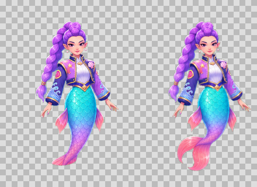
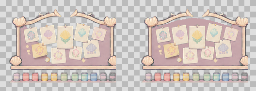
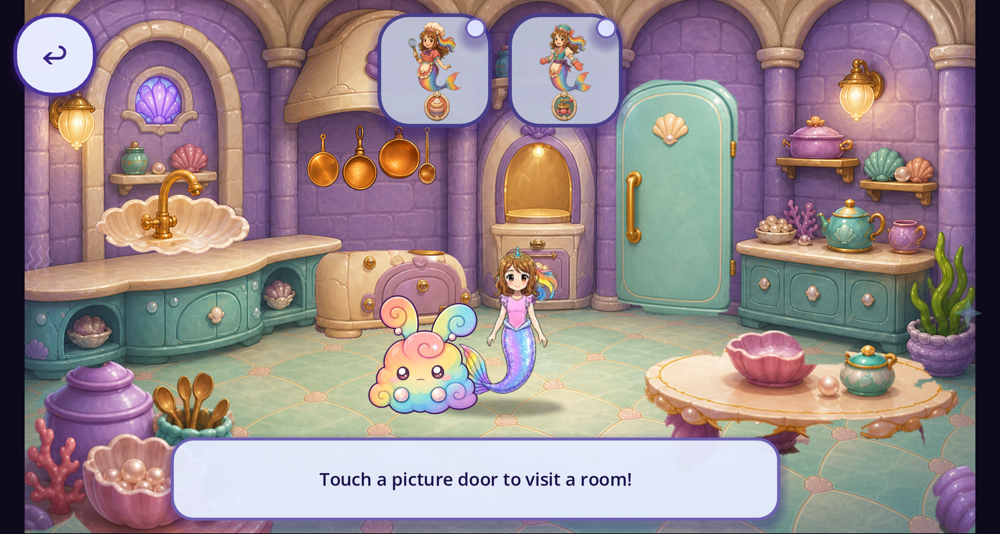
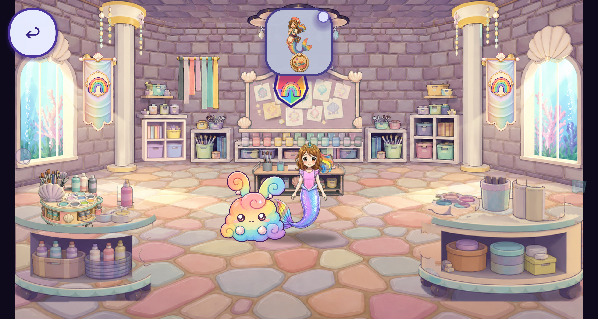
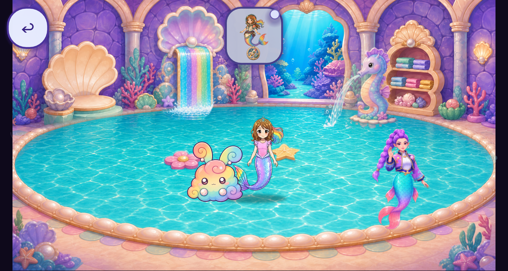

Rumi tails and room transparency
September 30 follow-up · baseline 55032e88 · native Aseprite repairs.
Rumi: missing split fin restored
Before on the left; after on the right. Complete source contours and the approved neighboring-pose tail are reused. Both runtime atlases are repaired; the separate swimming row is unchanged.

All eight poses
After

Craft board: solid backing restored
Before on the left; after on the right. The approved room reference establishes solid backing behind the notes. All eight states receive the bounded backing repair; remaining edge fragments in states 2 and 6 are removed.

The gap above the paint-jar shelf remains transparent by design.
Kitchen, craft room and Eagle investigation
Kitchen pan outlines, pan handle openings and stage-edge foreground pieces are intentional. The craft table frame and ribbon gaps are intentionally open. These were inspected alongside the current fridge and supply-cupboard states; no additional reproduced alpha defect was found in those samples. The replacement Eagle has no broad body transparency defect; its small partial-alpha clusters lie at silhouette details.


Rumi in normal free play

Desktop Mobile renderer, Godot 4.7.2, 2560×1369. This is not target-phone or owner acceptance.
Verification and limits
Native pixel provenance, exact six-output rebuild and V2 interaction audit pass. Full regression status is recorded in the review receipt.
The original pool visual probe failed because a story clip covered its test. Its seen-clip fixture passed every assertion. An extended diagnostic capture showed overlapping Rumi actors and caption occlusion; it is preserved as unaccepted staging evidence, not represented as a clean reveal. Target-device, full reveal staging, child and owner acceptance remain open.